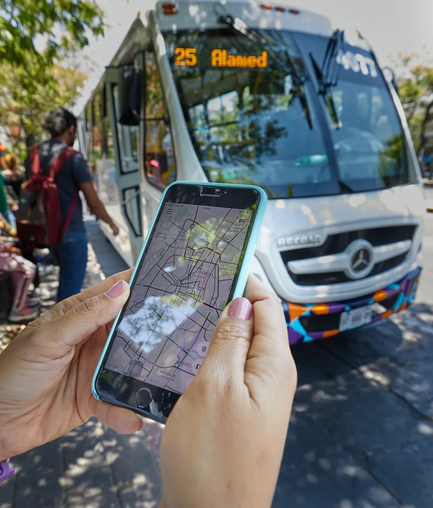

Pago Digital del Transporte Público
El pago electrónico reduce el contacto entre personas y la manipulación de efectico.
El pago electrónico reduce el contacto entre personas y la manipulación de efectico.
La principal utilidad tiene que ver con la salud pública. En medio de una pandemia, el procurar el menor contacto posible entre el usuario y el colaborador del servicio y el evitar la manipulación de los contaminados billetes y monedas son acciones que podrían salvarle de un contagio.
VENTAJAS
Colaboración
La cooperación es clave para la cadena de suministro, ya que hay muchas partes interesadas involucradas, y desglosar los datos para facilitar el seguimiento es importante para que se pueda ver cada paso.
Exactitud
Los consumidores son cada vez más estrictos en la entrega de sus pedidos, lo que significa menos tolerancia a tener errores.
Eficiencia
Al digitalizarte, se reducen los errores humanos y, al disponer de los datos y la visibilidad adecuados, puedes prepararte para tomar decisiones de un momento a otro.
Aplicación Digital
El transporte es una parte integral de la vida urbana. Ya sea que viajes en tren, metro, autobús, tren ligero o ferry, uses scooters, bicicletas o compartas el viaje en Uber, obtener la mejor información sobre movilidad es fundamental. Moovit te guía desde el punto A hasta el punto B de la manera más fácil y eficiente. Obtén horarios e indicaciones de trenes y autobuses, mapas, y tiempos de llegada en tiempo real con facilidad para que puedas planificar tu viaje con confianza. Encuentra alertas críticas e interrupciones en el servicio para tus líneas favoritas
